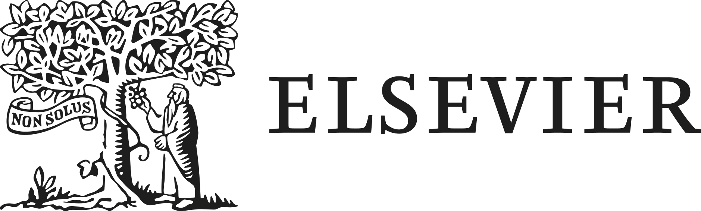

Testing environment. Do not enter a real email address. Use a placeholder such as fakename@email.com.

Onboarding and Enablement Hub
Customer Hub
·
Switch path
Share this hub
LRS idle
0 sent
Need help? Support Center